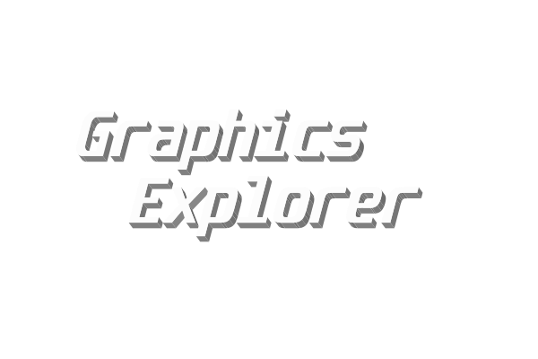

Home
IFS-fractal
Color scheme
Transformation
Upload project
Fractal generator
Type
Koch curve
Harter–Heighway dragon
The type of fractal specifies a certain construction algorithm. Different types of fractals have different parameters and appearance.
Line count
The number of lines of the elementary fragment of the fractal. Available only for Koch curve.
Color scheme
Monochromatic
Inversed monochromatic
Transparent background
A color scheme is a set of different colors which an algorithm will use to construct a fractal.
Iterations count
Number of iterations of fractal construction. Determines the depth of construction.
Show every iteration with some interval.
Animate iterations
.ge file is a project file which contains data about type of project and all parameters for this type. You can upload this file and parameters will be inserted automatically. You will see the same image in the viewport as it was before.
Download .ge
Download .png
Read more about fractals
1.00x
×
Some text in the Modal..